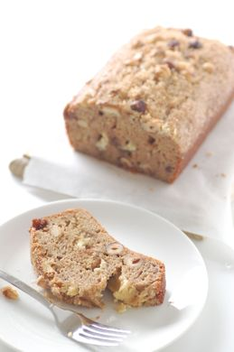

Easy Bake Banana Bread
Recipe by: Elise Bauer

Ingredients
- 2 to 3 very ripe bananas, peeled (about 1 1/4 to 1 1/2 cups mashed)
- 1/3 cup melted butter
- 1 teaspoon baking soda
- 1/4 cup sugar
- 1 large egg, beaten
- 1 teaspoon vanilla extract
- 1 1/2 cups of all-purpose flour
- Pinch of salt
Method
- Preheat the oven to 350°F (175°C), and butter a 4x8-inch loaf pan.
- In a mixing bowl, mash the ripe bananas with a fork until completely smooth. Stir the melted butter into the mashed bananas.
- Mix in the baking soda and salt. Stir in the sugar, beaten egg, and vanilla extract. Mix in the flour.
- Pour the batter into your prepared loaf pan. Bake for 50 minutes to 1 hour at 350°F (175°C), or until a tester inserted into the center comes out clean.
- Remove from oven and let cool in the pan for a few minutes. Then remove the banana bread from the pan and let cool completely before serving. Slice and serve. (A bread knife helps to make slices that aren't crumbly.)
For more quick and easy recipes, please visit Simply Recipes
Contact
Email me with Questions.
The University of Montana
32 Campus Dr
Missoula, MT 59812